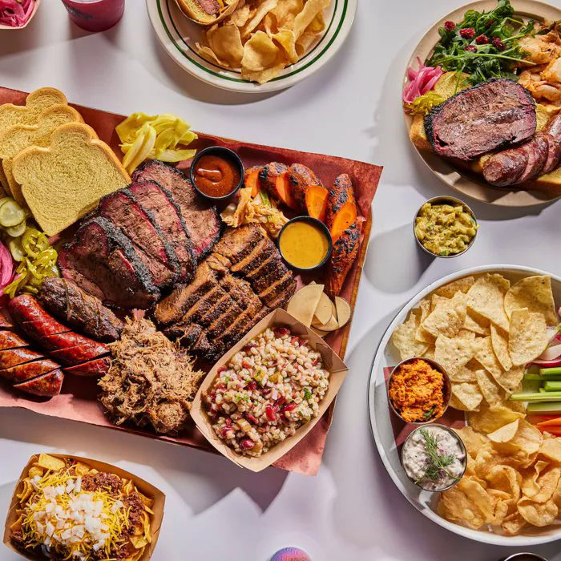

LeRoy and Lewis Barbecue
A South Austin barbecue destination with a creative approach to smoked meats.
5621 Emerald Forest Dr., Austin, TX, 78745, USA
The destination edit
LeRoy and Lewis Barbecue
5621 Emerald Forest Dr., Austin, TX, 78745, USA
What started as a food truck in 2017 is now in a spacious location in Garrison Park. The moniker refers to the duo of married couples who run this enticing operation where the setting gives off midcentury vibes with its glazed brick exterior and peak-roofed dining area. The excellent barbecue menu isn't built around brisket, although that beloved item is available as a daily special at the end of the week. In fact, several specials keep things interesting throughout the week, such as spice-crusted, melt-in-your mouth beef cheeks or the daily sausage which may be studded with Hatch green chiles and mozzarella cheese. The banana pudding tiramisu is a clever hybrid with coffee-soaked Nilla wafers.